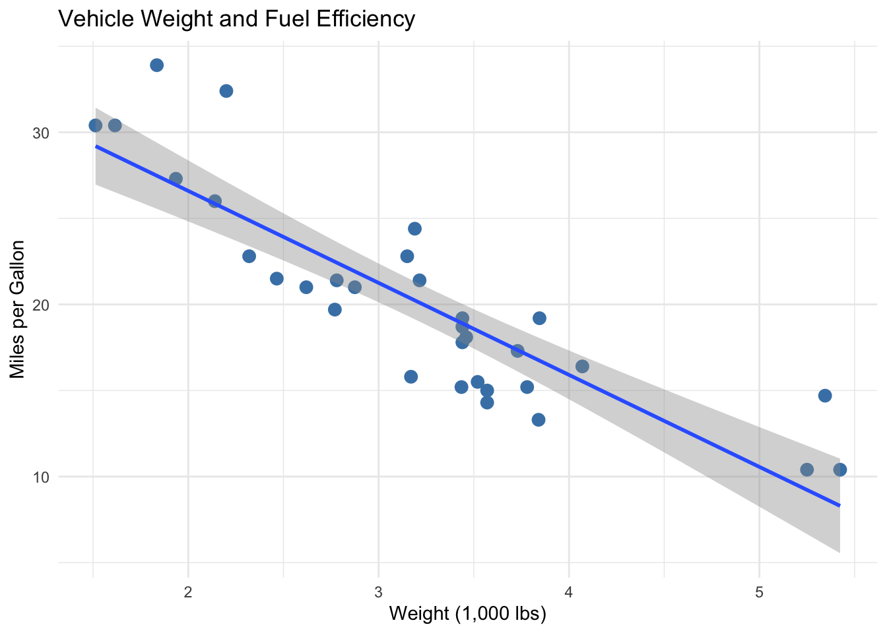

This laboratory investigates the relationship between vehicle weight and fuel efficiency using the mtcars dataset.
R and Python independently estimated the same linear regression model. Their previously observed results agreed within a numerical tolerance of 0.0001.
2 Research Question
How is vehicle weight associated with miles per gallon?
model <-lm(mpg ~ wt, data = dataset)summary(model)
Call:
lm(formula = mpg ~ wt, data = dataset)
Residuals:
Min 1Q Median 3Q Max
-4.5432 -2.3647 -0.1252 1.4096 6.8727
Coefficients:
Estimate Std. Error t value Pr(>|t|)
(Intercept) 37.2851 1.8776 19.858 < 2e-16 ***
wt -5.3445 0.5591 -9.559 1.29e-10 ***
---
Signif. codes: 0 '***' 0.001 '**' 0.01 '*' 0.05 '.' 0.1 ' ' 1
Residual standard error: 3.046 on 30 degrees of freedom
Multiple R-squared: 0.7528, Adjusted R-squared: 0.7446
F-statistic: 91.38 on 1 and 30 DF, p-value: 1.294e-10
print(coef(summary(model)))
Estimate Std. Error t value Pr(>|t|)
(Intercept) 37.285126 1.877627 19.857575 8.241799e-19
wt -5.344472 0.559101 -9.559044 1.293959e-10
5 Visualization
ggplot(dataset, aes(x = wt, y = mpg)) +geom_point(color ="steelblue", size =3) +geom_smooth(method ="lm", se =TRUE) +labs(title ="Vehicle Weight and Fuel Efficiency",x ="Weight (1,000 lbs)",y ="Miles per Gallon" ) +theme_minimal()

5.1 Cross-Language Validation
R and Python independently estimated the same ordinary least squares regression model using the same 32 observations.
The R reference values were exported at full numerical precision to r_reference.csv.
The Python implementation independently calculated the intercept, slope, and R-squared. The earlier full-precision comparison passed for all three metrics.
# Load the full-precision R referencereference <-read.csv("r_reference.csv")# Confirm the expected metrics existstopifnot(identical( reference$metric,c("intercept", "slope", "r_squared") ),all(is.finite(reference$value)))# Display the full-precision R resultsprint(reference, digits =17)